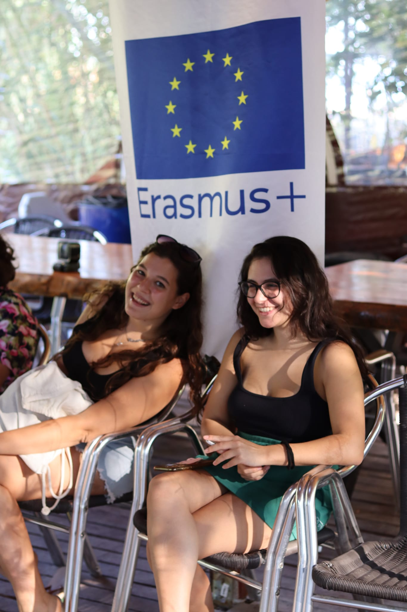
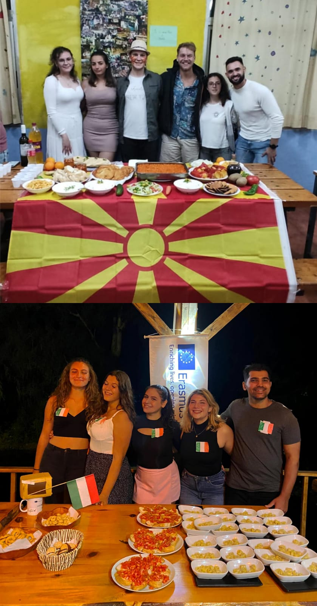
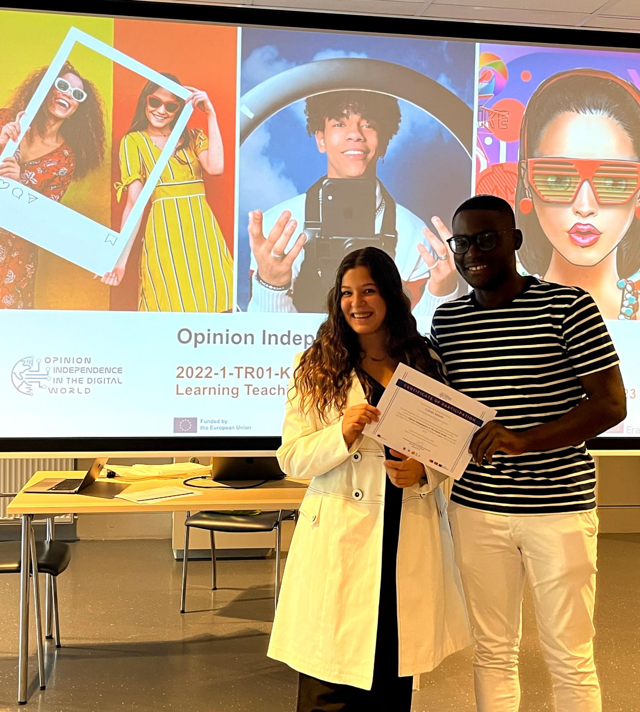

Informazioni generali
Erasmus+ è il programma dell'UE per l'istruzione, la formazione, la gioventù e lo sport in Europa.
I programmi Erasmus+ sono strutturati in tre azioni chiave:
- Azione chiave 1: mobilità individuale ai fini dell'apprendimento.
- Azione chiave 2: innovazione e buone pratiche.
- Azione chiave 3: sostegno alla riforma delle politiche.
Gli scambi giovanili (KA1) a cui ho preso parte sono rivolti a persone di età compresa tra i 13 e i 30 anni e sono gestiti da organizzazioni giovanili, gruppi informali di giovani o altre organizzazioni.

In breve:
- Età: 13-30 anni
- Destinazioni: Tutta Europa
- Costi: Coperti dall'UE
Attività

In uno scambio giovanile un gruppo di ragazzi/e provenienti da diversi paesi in Europa si incontrano per un arco di tempo che va dai 5 ai 21 giorni al fine di confrontarsi su un tema specifico.
Un youth exchange si basa su un insegnamento di tipo non formale, attraverso attività divertenti, workshop e dibattiti partecipativi, lo scambio diventa un'occasione per approfondire e portare consapevolezza su temi fondamentali per i giovani europei.
Le attività sono molteplici: energizer, giochi di gruppo e di fiducia, attività specifiche sul topic scelto, visite didattiche e infine l'intercultural night, una serata in cui tutti i gruppi presentano il proprio paese attraverso giochi, musica e cibo tipico.
Gli scambi giovanili mirano a promuovere il dialogo interculturale e l'identità europea, sviluppando al contempo le competenze personali dei giovani.
Inoltre, attraverso il rafforzamento dei valori europei e l'abbattimento di pregiudizi e stereotipi, queste esperienze cercano di aumentare la consapevolezza dei giovani su temi socialmente rilevanti, stimolando così una partecipazione attiva e democratica alla vita della comunità.
Youthpass
Le esperienze di apprendimento dei partecipanti sono riconosciute attraverso uno Youthpass.
Lo Youthpass è il certificato rilasciato ai giovani che hanno beneficiato delle opportunità del programma Erasmus+, settore Gioventù, e ha l'obiettivo di attestare le competenze acquisite e spendibili nel proprio percorso di vita.
È uno strumento di riconoscimento europeo e ha una doppia valenza: da un lato attesta la partecipazione ad attività del programma, dall'altro aiuta i giovani partecipanti a riflettere su ciò che hanno imparato attraverso un'auto-valutazione guidata.

Certificazione:
- Tipo: Youthpass
- Valore: Formazione non formale
- Scopri di più